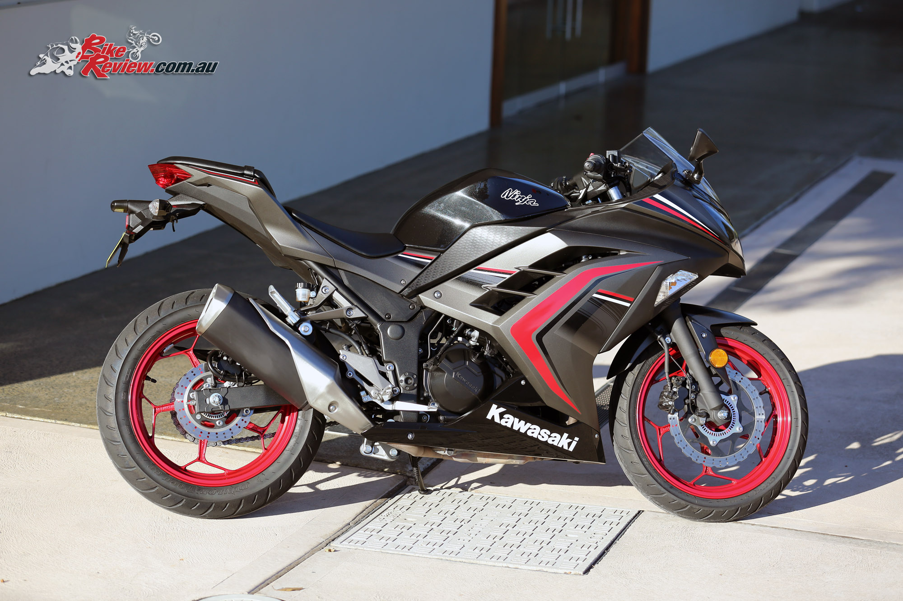
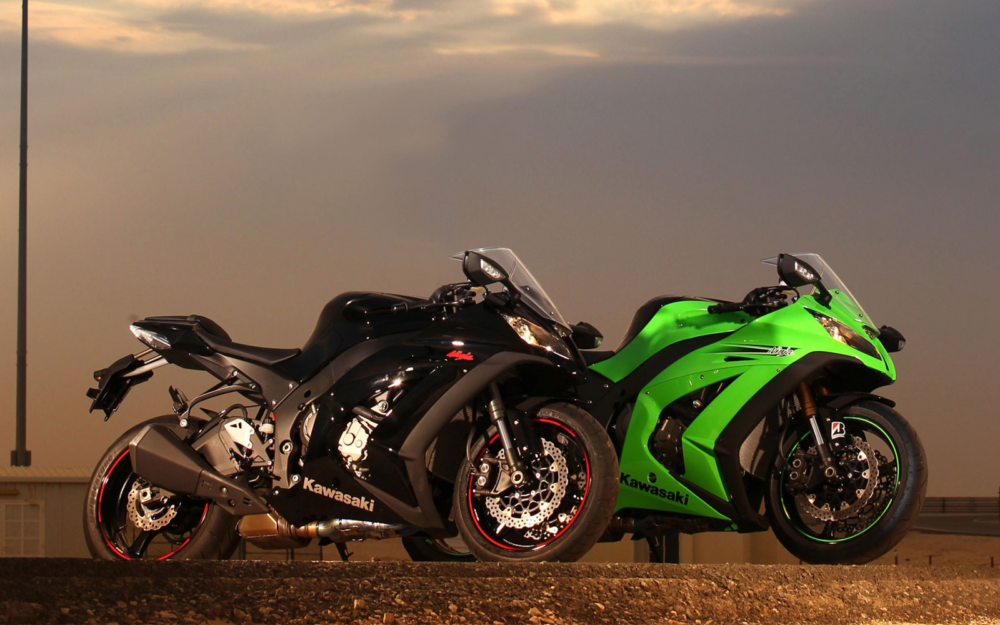
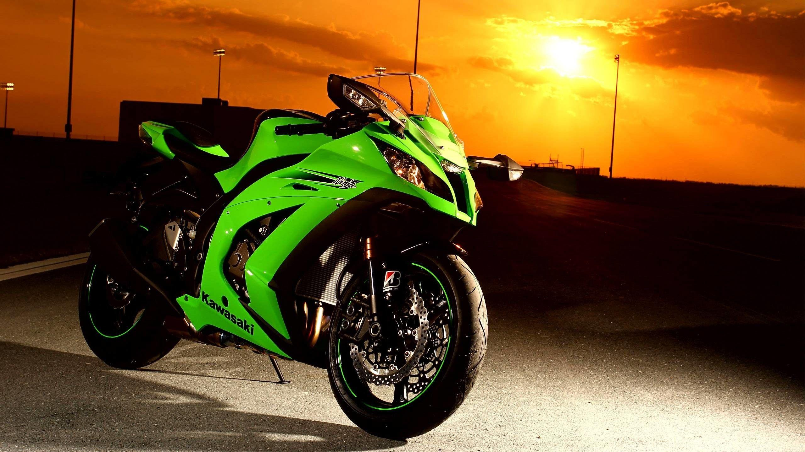
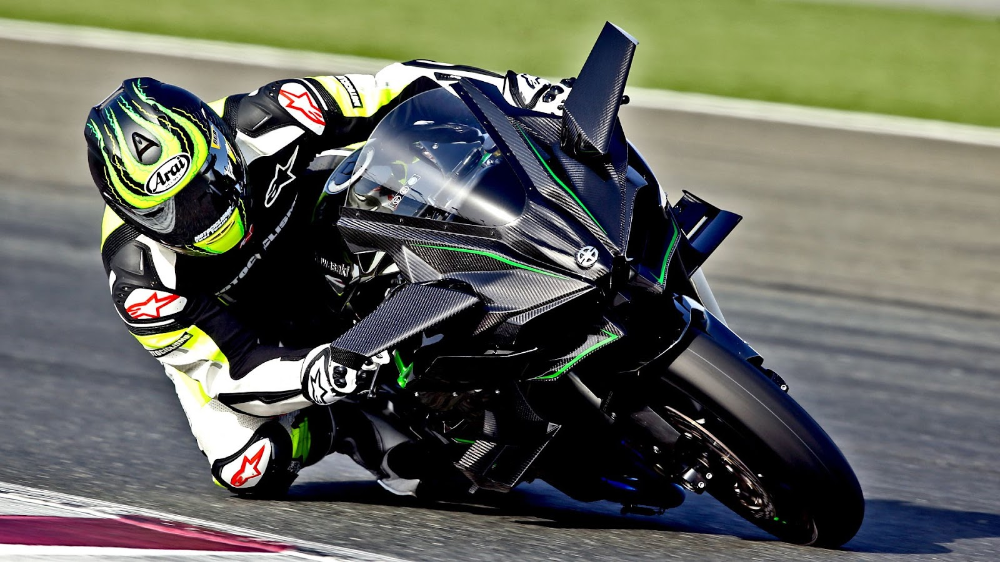

Onderdelen van deze website
website
onderdelen
KAWASAKI
Geschiedenis en meer
Iconische Modellen
Geschiedenis van kawasiki
Best Fotos van Kawasaki ninja
Best fotos van kawasaki ninja
Bijnamen en meer
Bijnamen
Top 3
Mijn favoriete
Beste fotos van sommige ninjas
Kawasaki ninja 125
Kawasaki ninja 300

Kawasaki ninja ZX-10R

Kawasaki ninja 400

Kawasaki ninja 600
kawasaki ninja H2r
